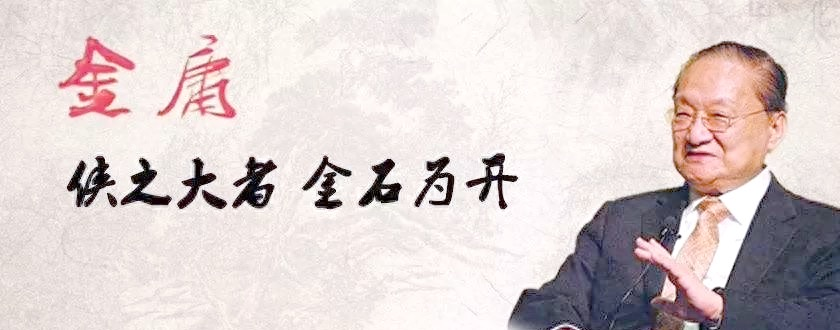

剧情赏析
《天龙八部》采用多线并行的宏大叙事，以段誉、虚竹、萧峰三位义弟的人生轨迹串联整部乱世江湖。三条线索相互交织、层层推进，最终在少林寺大战汇聚，在雁门关落幕，结构完整、气势磅礴。
段誉初入江湖，奇遇不断，习得凌波微步、六脉神剑，一路情深痴恋，见证江湖纷争与人心复杂。虚竹破解绝世珍珑棋局，脱离佛门清规，开启跌宕人生，在无心之中成就传奇。
而萧峰的人生主线最为悲壮，从受人敬仰的丐帮帮主，一夜之间沦为武林公敌。寻身世、洗冤屈、失挚爱、担大义，一生颠沛流离。全书高潮雁门关一战，萧峰以一己之身平息两国战乱，用生命诠释侠之大者、为国为民。
整部剧情没有绝对圆满，只有真实的人生百态。繁华起落、爱恨浮沉、得失无常，让读者在武侠故事中读懂命运与人生。
